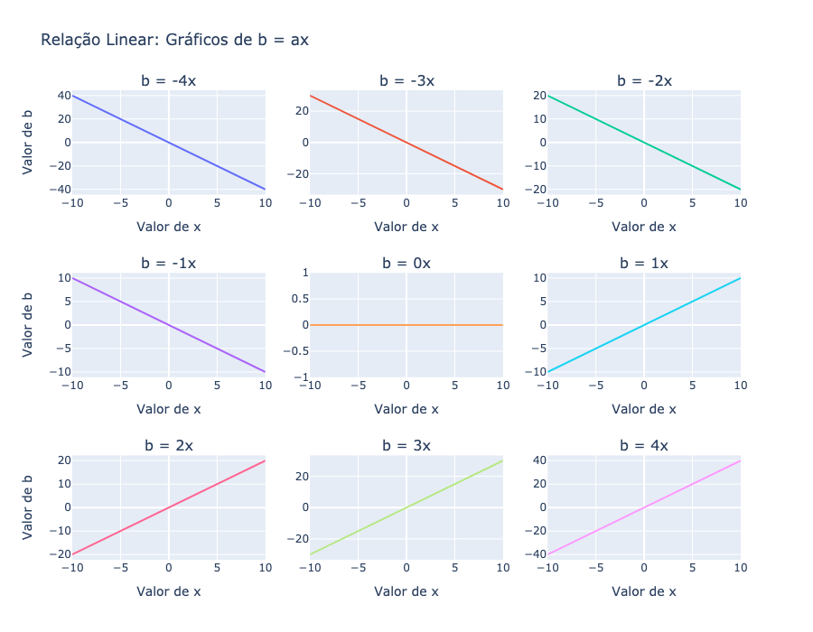
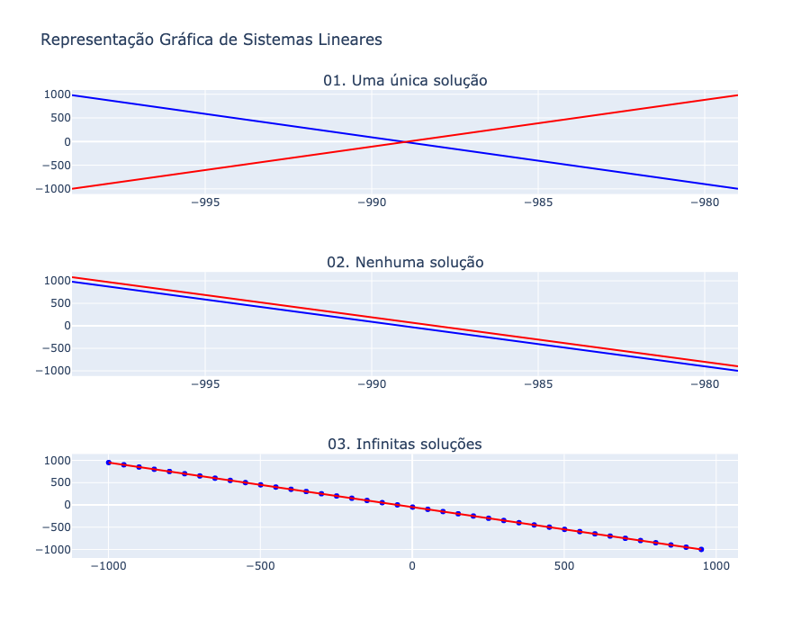

Sistemas Lineares#
Uma equação do tipo \(ax = b\), que expressa a variável \(b\) em função da variável \(x\) e da constante \(a\), é chamada de equação linear. O termo linear é utilizado porque o gráfico dessa equação é uma linha reta, conforme ilustrado a seguir.

Da mesma forma, a equação
que expressa a variável \(b\) em função das variáveis \(x_1\), \(x_2\), \(\cdots\), \(x_n\) e das constantes conhecidas \(a_1\), \(a_2\), \(\cdots\), \(a_n\) é chamada de equação linear. Em diversos cenários, fornecemos \(b\) e as constantes \(a_1\), \(a_2\), \(\cdots\), \(a_n\) e devemos encontrar os números \(x_1\), \(x_2\), \(\cdots\) , \(x_n\) chamados incógnitas, que satisfazem a equação.
Uma solução de uma equação linear (1) é uma sequência de \(n\) números \(s_1\), \(s_2\), \(\cdots\), \(s_n\) que têm como propriedade satisfazer a expressão (1) quando \(x_1 = s_2\), \(x_2 = s_2\), \(\cdots\) , \(x_n = s_n\) são substituídas nessa expressão. Então, \(x_1 = 4\), \(x_2 = -1\) e \(x_3 = 2\) é uma solução para a equação linear:
pois
Um sistema de \(m\) equações lineares a \(n\) incógnitas \(x_1\), \(x_2\), \(\cdots\) , \(x_n\) ou simplesmente um sistema linear, é um conjunto de \(m\) equações lineares, cada uma com \(n\) incógnitas.
Uma solução de um sistema linear é uma sequência de \(n\) números \(s_1\), \(s_2\), \(\cdots\), \(s_n\) que têm como propriedade o fato de satisfazer cada equação do sistema quando \(x_1 = s_1\), \(x_2 = s_2\), \(\cdots\) , \(x_n = s_n\) são substituídos na expressão. Para resolver um sistema linear, utilizamos uma técnica conhecida como método da eliminação.
Método de Eliminação#
O método de eliminação é uma técnica utilizada para resolver sistemas lineares. O objetivo principal do método é simplificar o sistema até que as soluções possam ser facilmente determinadas, eliminando variáveis gradualmente.
O método de eliminação pode ser resumido nos seguintes passos:
Trocar a posição de duas equações.
Multiplicar uma equação por uma constante diferente de zero.
Adicionar um múltiplo de uma equação à outra.
O método da eliminação produz outro sistema linear que tem exatamente as mesmas soluções do sistema dado. O novo sistema linear pode, então, ser resolvido facilmente.
Exemplo 1.1
O diretor de uma empresa de açaí da região amazônica tem R$100.000,00 para investir. Como estratégia, ele decidiu diversificar o investimento entre dois tipos de aplicação: compra de equipamentos para processamento de açaí (com retorno estimado de 5% ao ano) e ações de uma cooperativa de produtores da região (com retorno estimado de 9% ao ano). O objetivo do diretor é obter um retorno total de R$7.800,00 ao ano com esses investimentos.
Definindo x como o valor investido em equipamentos e y como o valor investido nas ações da cooperativa, temos as seguintes condições:
O total investido deve ser R$100.000,00:
O retorno total esperado deve ser R$7.800,00:
Assim, formamos o seguinte sistema linear:
Para resolver o sistema, realizamos uma manipulação algébrica que gera um sistema equivalente. Multiplicamos a primeira equação por \(-0,05\) e somamos à segunda, eliminando a variável x. Isso gera o seguinte sistema equivalente:
A partir da nova equação gerada (\(0,04y = 2.800\)), isolamos y:
Substituímos o valor de y na primeira equação:
Com isso, o diretor deve investir R$30.000 em equipamentos e R$70.000 nas ações da cooperativa para atingir o retorno esperado de R$7.800 ao ano. Esses valores satisfazem ambas as equações do sistema linear, garantindo o sucesso da estratégia de investimento.
Exemplo 1.2
Considera o sistema linear
Decidimos novamente eliminar \(x\). Adicionamos (-2) vezes a primeira equação à segunda, obtendo
onde a segunda equação não tem sentido. Isto significa que o sistema linear nao tem solução. Poderíamos chegar à mesma conclusão observando que o lado esquerdo da segunda equação é igual ao dobro do lado esquerdo da primeira equação, mas o lado direito da segunda equação não é igual ao dobro do lado direito da primeira equação.
Exemplo 1.3
Considere o sistema linear
Para eliminar a variável x, multiplicamos a primeira equação por -2 e somamos à segunda equação. Essa manipulação gera um sistema equivalente:
A partir da equação gerada (\(-3y + 3z = 12\)), isolamos y em função de z:
Substituímos y na primeira equação para determinar x em função de z:
Assim, uma solução geral para o sistema é dada por:
Onde r é um número real arbitrário. Isso significa que o sistema tem infinitas soluções, dependendo do valor atribuído a r.
Se r = 1:
\[\begin{split} x = 5, \\ y = -3, \\ z = 1 \end{split}\]Se r = -2:
\[\begin{split} x = 2, \\ y = -6, \\ z = -2 \end{split}\]
Cada valor de r gera uma solução válida.
Nota
Os exemlos apresentados sugerem que um sistemas linear pode ter uma única solução, nenhuma solução, ou infinitas soluções.

O sistema tem uma única solução; ou seja, as retas azul e vermelha se cruzam exatamente em um ponto.
O sistema não tem solução; ou seja, as relas azul e vermelha não se cruzam.
O sistema tem infinitas soluções, ou seja, as retas azul e vermelha são coincidentes.
Exercício 1.1
Resolva os sistemas lineares dado utilizando o método da eliminação.
Exercício 1.2 - Planejamento de Produção
Um fabricante produz três tipos diferentes de produtos químicos: A, B e C. Cada produto deve passar por duas máquinas de processamento: X e Y. Neste processo, cada uma das máquinas é utilizada durante os seguintes intervalos de tempo:
Uma tonelada de A necessita 2 horas na máquina X e 2 horas na máquina Y.
Uma tonelada de B necessita 3 horas na máquina X e 2 horas na máquina Y.
Uma tonelada de C necessita 4 horas na máquina X e 3 horas na máquina Y.
A máquina X está disponível 80 horas por semana e a máquina Y 60 horas por semana. Como a administração não quer manter as dispendiosas máquinas X e Y paradas, ela gostaria de saber quantas toneladas de cada produto devem ser produzidas para que as máquinas sejam utilizadas de maneira ótima. Admite-se que o fabricante possa vender tantos produtos quanto produz.